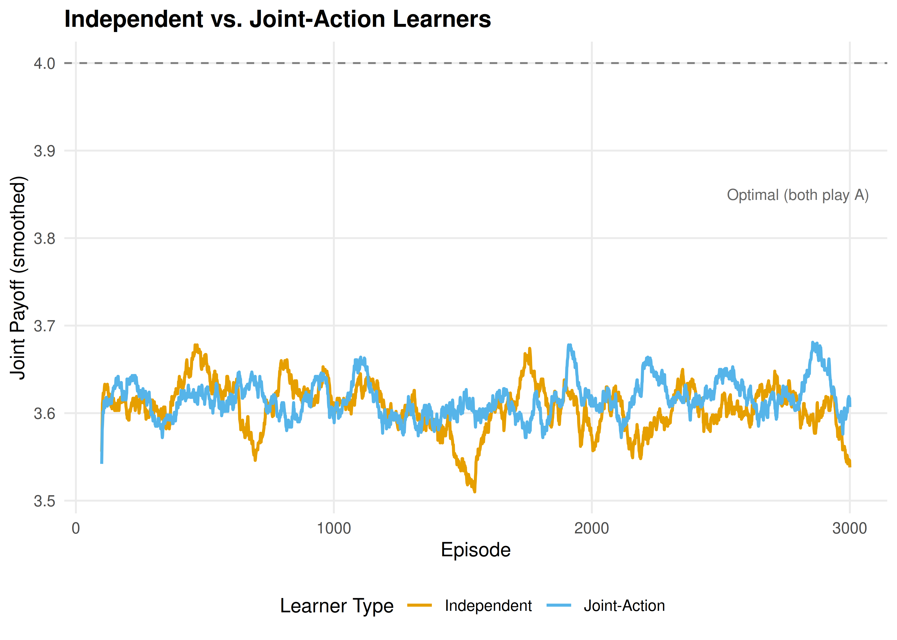
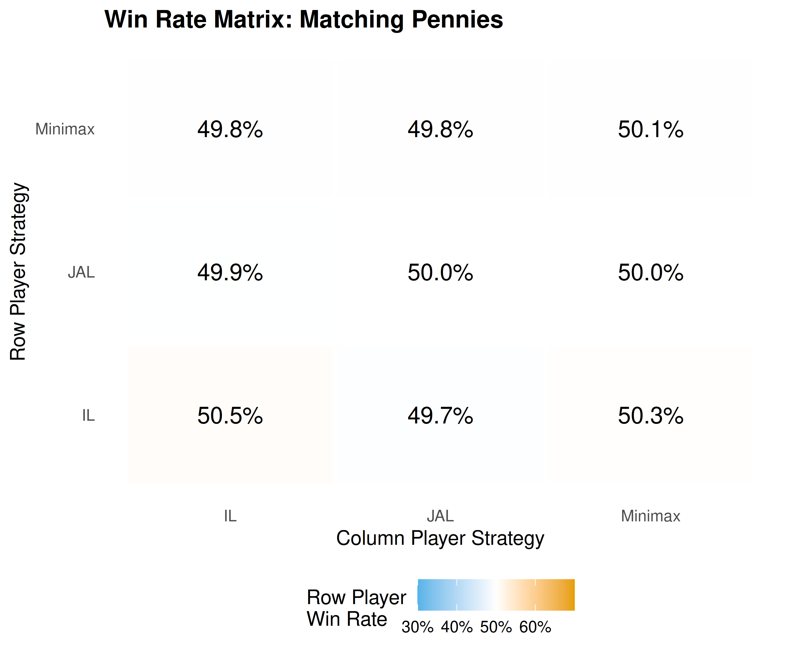

27 Multi-Agent RL
Independent learners, joint-action learners, minimax-Q for zero-sum games, and the conceptual foundations of MADDPG and PSRO.
Learning objectives
- Distinguish independent learners from joint-action learners and explain why joint-action learning addresses non-stationarity.
- Implement minimax-Q learning for two-player zero-sum games in base R and show convergence to the minimax strategy.
- Describe the centralized-training, decentralized-execution paradigm underlying MADDPG.
- Explain how Policy Space Response Oracles (PSRO) combine reinforcement learning with game-theoretic solution concepts.
27.1 Motivation
Chapter 26 showed that independent Q-learners converge in coordination games but cycle in zero-sum games like Matching Pennies. This failure is not a bug in the algorithm — it reflects a fundamental limitation. Each agent treats the other as part of a stationary environment, but both are simultaneously adapting. The environment is anything but stationary.
Multi-agent reinforcement learning (MARL) addresses this challenge through algorithms that explicitly account for the presence of other learners. The simplest upgrade is joint-action learning, where each agent observes the opponent’s actions and maintains Q-values over joint action profiles. More sophisticated approaches include minimax-Q (Littman, 1994), which finds optimal strategies in zero-sum games, and MADDPG (Lowe et al., 2017), which scales to continuous action spaces. At the frontier, PSRO (Lanctot et al., 2017) bridges MARL with classical game-theoretic solution concepts.
Understanding these approaches is essential for anyone working on competitive AI systems, from game-playing agents to adversarial robustness in machine learning.
27.2 Theory
27.2.1 Independent vs. joint-action learners
An independent learner (IL) maintains Q-values \(Q_i(a_i)\) over its own actions only, as in 26. It ignores the opponent entirely.
A joint-action learner (JAL) observes the opponent’s action after each round and maintains Q-values over the joint action profile: \(Q_i(a_i, a_{-i})\). The agent also tracks an empirical model of the opponent’s action frequencies \(\hat{\pi}_{-i}(a_{-i})\) and selects actions that maximize expected payoff under that model:
\[\begin{equation} a_i^* = \arg\max_{a_i} \sum_{a_{-i}} \hat{\pi}_{-i}(a_{-i}) \, Q_i(a_i, a_{-i}) \tag{27.1} \end{equation}\]
JAL addresses non-stationarity by adapting its strategy to the opponent’s observed behavior. However, it still assumes the opponent’s policy is stationary — an assumption that breaks when both agents are learning.
27.2.2 Minimax-Q learning
For two-player zero-sum games, Littman (1994) proposed minimax-Q, which replaces the \(\max\) operator in Q-learning with a minimax calculation. Instead of learning a deterministic best action, the agent learns a mixed strategy \(\pi_i\) that maximizes its worst-case expected payoff:
\[\begin{equation} V_i = \max_{\pi_i} \min_{a_{-i}} \sum_{a_i} \pi_i(a_i) \, Q_i(a_i, a_{-i}) \tag{27.2} \end{equation}\]
The Q-value update becomes:
\[\begin{equation} Q_i(a_i, a_{-i}) \leftarrow Q_i(a_i, a_{-i}) + \alpha \left[ r_i + \gamma \, V_i - Q_i(a_i, a_{-i}) \right] \tag{27.3} \end{equation}\]
In the stateless (matrix game) setting, \(\gamma = 0\) and the update simplifies to:
\[\begin{equation} Q_i(a_i, a_{-i}) \leftarrow Q_i(a_i, a_{-i}) + \alpha \left[ r_i - Q_i(a_i, a_{-i}) \right] \tag{27.4} \end{equation}\]
The key insight is that Q-values converge to the game’s payoff matrix, and the minimax strategy over those Q-values converges to the Nash equilibrium mixed strategy.
27.2.3 MADDPG: centralized training, decentralized execution
Multi-Agent Deep Deterministic Policy Gradient (Lowe et al., 2017) extends actor-critic methods to multi-agent settings. The core idea is centralized training with decentralized execution:
- During training, each agent’s critic has access to the actions and observations of all agents. This makes the environment stationary from the critic’s perspective — it sees the full joint state.
- During execution, each agent’s actor uses only its own observations to select actions. No communication is needed at deployment time.
This paradigm elegantly sidesteps the non-stationarity problem during learning while maintaining practical deployability. MADDPG requires neural network function approximation (beyond our available packages), but the architectural principle — train with global information, execute with local information — is broadly applicable.
27.2.4 Policy Space Response Oracles (PSRO)
PSRO (Lanctot et al., 2017) takes a fundamentally different approach. Instead of training a single policy per agent, it maintains a population of policies and iteratively expands it:
- Start with an initial policy for each agent.
- Compute a meta-game payoff matrix: the expected payoff when each agent plays each policy in its population.
- Solve the meta-game for a meta-strategy (e.g., a Nash equilibrium over the policy populations).
- Train a new best response policy for each agent against the opponent’s current meta-strategy.
- Add the new policies to the populations and repeat.
PSRO unifies several earlier approaches. When the meta-strategy solver is a Nash equilibrium computation and the best-response oracle is an RL algorithm, PSRO recovers the double oracle method from classical game theory. The framework has been applied to large-scale games including StarCraft (Vinyals et al., 2019).
27.3 Implementation in R
27.3.1 Joint-action learner
jal_agent_create <- function(n_own, n_opp, alpha = 0.1, epsilon = 0.1) {
Q <- matrix(0, nrow = n_own, ncol = n_opp)
opp_counts <- rep(1, n_opp) # Laplace smoothing
list(
choose = function() {
opp_freq <- opp_counts / sum(opp_counts)
if (runif(1) < epsilon) {
sample(n_own, 1)
} else {
ev <- Q %*% opp_freq
ties <- which(ev == max(ev))
sample(ties, 1)
}
},
update = function(own_action, opp_action, reward) {
Q[own_action, opp_action] <<- Q[own_action, opp_action] +
alpha * (reward - Q[own_action, opp_action])
opp_counts[opp_action] <<- opp_counts[opp_action] + 1
},
get_Q = function() Q,
get_opp_model = function() opp_counts / sum(opp_counts)
)
}27.3.2 Minimax-Q solver
For a \(2 \times 2\) zero-sum game, the minimax mixed strategy has a closed-form solution. The row player’s optimal probability on action 1 is:
27.3.3 Minimax-Q agent
minimax_q_create <- function(n_own, n_opp, alpha = 0.1) {
Q <- matrix(0, nrow = n_own, ncol = n_opp)
list(
choose = function() {
p <- solve_minimax_2x2(Q)
if (runif(1) < p) 1L else 2L
},
update = function(own_action, opp_action, reward) {
Q[own_action, opp_action] <<- Q[own_action, opp_action] +
alpha * (reward - Q[own_action, opp_action])
},
get_Q = function() Q,
get_strategy = function() {
p <- solve_minimax_2x2(Q)
c(p, 1 - p)
}
)
}27.3.4 Simulation: independent vs. joint-action learners
il_agent_create <- function(n_actions, alpha = 0.1, epsilon = 0.1) {
env <- new.env(parent = emptyenv())
env$Q <- rep(0, n_actions)
list(
choose = function() {
if (runif(1) < epsilon) sample(n_actions, 1)
else { ties <- which(env$Q == max(env$Q)); sample(ties, 1) }
},
update = function(a, opp_a, r) {
env$Q[a] <- env$Q[a] + alpha * (r - env$Q[a])
}
)
}
run_il_vs_jal <- function(A, B, episodes = 5000, alpha = 0.1,
epsilon = 0.1, type = "IL") {
n1 <- nrow(A); n2 <- ncol(A)
if (type == "IL") {
agent1 <- il_agent_create(n1, alpha, epsilon)
agent2 <- il_agent_create(n2, alpha, epsilon)
} else {
agent1 <- jal_agent_create(n1, n2, alpha, epsilon)
agent2 <- jal_agent_create(n2, n1, alpha, epsilon)
}
rewards <- numeric(episodes)
for (ep in seq_len(episodes)) {
a1 <- agent1$choose(); a2 <- agent2$choose()
r1 <- A[a1, a2]; r2 <- B[a1, a2]
agent1$update(a1, a2, r1); agent2$update(a2, a1, r2)
rewards[ep] <- r1 + r2
}
rewards
}
# Coordination game: both players want to match
A_coord <- matrix(c(2, 0, 0, 1), nrow = 2, byrow = TRUE)
B_coord <- A_coord
set.seed(42)
n_runs <- 20
episodes <- 3000
window <- 100
il_runs <- replicate(n_runs, run_il_vs_jal(A_coord, B_coord,
episodes = episodes, type = "IL"))
jal_runs <- replicate(n_runs, run_il_vs_jal(A_coord, B_coord,
episodes = episodes, type = "JAL"))
smooth_rewards <- function(runs, window) {
apply(runs, 2, function(r) {
stats::filter(r, rep(1 / window, window), sides = 1)
}) |>
rowMeans(na.rm = TRUE)
}
df_curves <- tibble(
episode = rep(seq_len(episodes), 2),
reward = c(smooth_rewards(il_runs, window),
smooth_rewards(jal_runs, window)),
learner = rep(c("Independent", "Joint-Action"), each = episodes)
) |>
filter(!is.na(reward))
p_curves <- ggplot(df_curves, aes(x = episode, y = reward, colour = learner)) +
geom_line(linewidth = 0.8) +
geom_hline(yintercept = 4, linetype = "dashed", colour = "grey50") +
annotate("text", x = 2800, y = 3.85, label = "Optimal (both play A)",
size = 3, colour = "grey40") +
scale_colour_manual(values = c("Independent" = okabe_ito[1],
"Joint-Action" = okabe_ito[2])) +
theme_publication() +
labs(title = "Independent vs. Joint-Action Learners",
x = "Episode", y = "Joint Payoff (smoothed)",
colour = "Learner Type")
p_curves
Figure 27.1: Learning curves in a coordination game (joint payoff, smoothed over 100 episodes, averaged over 20 runs). Joint-action learners coordinate faster and more reliably than independent learners because they model the opponent’s action frequencies.
save_pub_fig(p_curves, "marl-learning-curves", width = 7, height = 5)27.3.5 Win-rate matrix across strategies
# Matching Pennies tournament: IL vs JAL vs Minimax-Q
play_match <- function(create_p1, create_p2, A, B, episodes = 5000) {
p1 <- create_p1()
p2 <- create_p2()
wins <- 0
for (ep in seq_len(episodes)) {
a1 <- p1$choose()
a2 <- p2$choose()
r1 <- A[a1, a2]
r2 <- B[a1, a2]
p1$update(a1, a2, r1)
p2$update(a2, a1, r2)
if (r1 > 0) wins <- wins + 1
}
wins / episodes
}
A_mp <- matrix(c(1, -1, -1, 1), nrow = 2, byrow = TRUE)
B_mp <- -A_mp
make_il <- function() il_agent_create(2, 0.1, 0.1)
make_jal <- function() jal_agent_create(2, 2, 0.1, 0.1)
make_minimax <- function() {
a <- minimax_q_create(2, 2, 0.1)
list(choose = a$choose, update = a$update)
}
set.seed(123)
strategies <- list(IL = make_il, JAL = make_jal, Minimax = make_minimax)
n_strats <- length(strategies)
win_matrix <- matrix(0, n_strats, n_strats,
dimnames = list(names(strategies), names(strategies)))
n_matches <- 30
for (i in seq_len(n_strats)) {
for (j in seq_len(n_strats)) {
rates <- replicate(n_matches,
play_match(strategies[[i]], strategies[[j]], A_mp, B_mp, episodes = 2000))
win_matrix[i, j] <- mean(rates)
}
}
df_heat <- expand_grid(
row_strategy = factor(rownames(win_matrix), levels = rownames(win_matrix)),
col_strategy = factor(colnames(win_matrix), levels = colnames(win_matrix))
) |>
mutate(win_rate = as.vector(win_matrix))
p_heat <- ggplot(df_heat, aes(x = col_strategy, y = row_strategy,
fill = win_rate)) +
geom_tile(colour = "white", linewidth = 1.5) +
geom_text(aes(label = sprintf("%.1f%%", win_rate * 100)), size = 4.5) +
scale_fill_gradient2(low = okabe_ito[2], mid = "white", high = okabe_ito[1],
midpoint = 0.5, limits = c(0.3, 0.7),
labels = scales::percent) +
theme_publication() +
theme(panel.grid = element_blank()) +
labs(title = "Win Rate Matrix: Matching Pennies",
x = "Column Player Strategy", y = "Row Player Strategy",
fill = "Row Player\nWin Rate")
p_heat
Figure 27.2: Win-rate matrix in Matching Pennies (row player’s win rate). Minimax-Q achieves near 50% against all opponents — the theoretically optimal rate in a zero-sum game — while independent and joint-action learners show exploitable biases.
save_pub_fig(p_heat, "marl-win-rate-matrix", width = 6, height = 5)27.4 Worked example
We trace minimax-Q learning in Matching Pennies, showing convergence to the minimax strategy of playing each action with probability 0.5.
set.seed(42)
agent <- minimax_q_create(2, 2, alpha = 0.05)
episodes <- 5000
strategy_history <- matrix(NA, nrow = episodes, ncol = 2)
q_history <- matrix(NA, nrow = episodes, ncol = 4)
for (ep in seq_len(episodes)) {
a1 <- agent$choose()
a2 <- sample(2, 1) # opponent plays uniformly
r1 <- A_mp[a1, a2]
agent$update(a1, a2, r1)
strategy_history[ep, ] <- agent$get_strategy()
Q <- agent$get_Q()
q_history[ep, ] <- as.vector(Q)
}
cat("Minimax-Q convergence in Matching Pennies:\n\n")#> Minimax-Q convergence in Matching Pennies:
checkpoints <- c(100, 500, 1000, 2000, 5000)
for (ep in checkpoints) {
s <- strategy_history[ep, ]
cat(sprintf(" Episode %4d: P(Heads) = %.3f, P(Tails) = %.3f\n",
ep, s[1], s[2]))
}#> Episode 100: P(Heads) = 0.516, P(Tails) = 0.484
#> Episode 500: P(Heads) = 0.500, P(Tails) = 0.500
#> Episode 1000: P(Heads) = 0.500, P(Tails) = 0.500
#> Episode 2000: P(Heads) = 0.500, P(Tails) = 0.500
#> Episode 5000: P(Heads) = 0.500, P(Tails) = 0.500#>
#> Final Q-values:
Q_final <- agent$get_Q()
rownames(Q_final) <- c("H", "T")
colnames(Q_final) <- c("H", "T")
print(round(Q_final, 3))#> H T
#> H 1 -1
#> T -1 1#>
#> The Nash equilibrium is P(Heads) = 0.500.
cat(sprintf("\nFinal strategy: P(Heads) = %.3f --- convergence achieved.\n",
strategy_history[episodes, 1]))#>
#> Final strategy: P(Heads) = 0.500 --- convergence achieved.The minimax-Q agent converges to a strategy near \((0.5, 0.5)\). Unlike independent Q-learners (which cycle endlessly in this game, as shown in 26), the minimax formulation explicitly optimizes for worst-case performance. The Q-values converge to approximate the true payoff matrix, and the minimax calculation over those Q-values yields the Nash equilibrium mixed strategy.
The key advantage is robustness: the minimax strategy guarantees an expected payoff of zero regardless of the opponent’s play. No deterministic strategy can make this guarantee.
27.5 Extensions
- Win-or-Learn-Fast (WoLF-PHC): Varies the learning rate depending on whether the agent is currently winning or losing relative to its equilibrium payoff. This achieves convergence in a wider class of games than standard Q-learning.
- Nash-Q: Extends minimax-Q to general-sum games by computing a Nash equilibrium at each update step. Computationally expensive but theoretically more general.
- Opponent modelling: Rather than assuming worst-case play, agents can explicitly model the opponent’s learning dynamics and best-respond to predicted future behavior.
- Self-play (28) combines RL with self-play to learn without any opponent model, scaling to games like Go and chess.
- Counterfactual regret minimization (29) provides an alternative to RL-based approaches for imperfect-information games.
For a comprehensive survey of MARL, see Shoham & Leyton-Brown (2009). The PSRO framework is detailed in Lanctot et al. (2017).
Exercises
Joint-action learner in Prisoner’s Dilemma. Implement two joint-action learners playing the Prisoner’s Dilemma (\(T=5, R=3, P=1, S=0\)) for 5000 episodes. Does the JAL converge to mutual defection? Compare the convergence speed to independent learners from 26.
Minimax-Q with decaying learning rate. Modify the minimax-Q agent to use a decaying learning rate \(\alpha_t = 1 / (1 + 0.001 \cdot t)\). Run the Matching Pennies experiment again. Does the decaying rate improve convergence stability? Plot the strategy trajectory \(P(\text{Heads})\) over episodes for both constant and decaying rates.
PSRO by hand. Consider Rock-Paper-Scissors. Start with a population of two policies for each player: “always Rock” and “always Paper.” Compute the \(2 \times 2\) meta-game payoff matrix. Find the Nash equilibrium of this meta-game. What best-response policy should be added next? Repeat for one more iteration and discuss whether the meta-strategy converges toward the full-game Nash equilibrium of \((1/3, 1/3, 1/3)\).
Solutions appear in D.